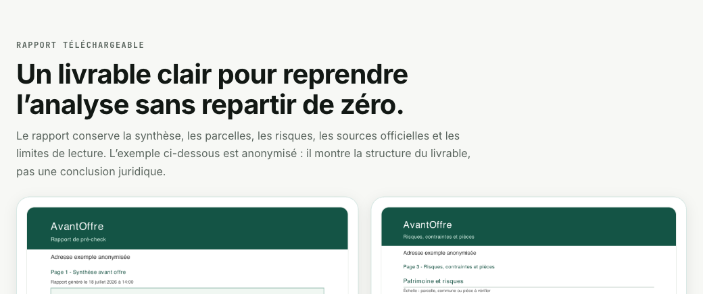
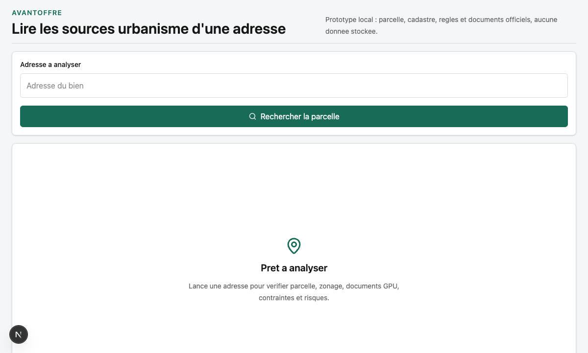

AvantOffre : les sources d’une adresse, réunies
AvantOffre réunit parcelle, zonage, règlement, risques et liens officiels d’une adresse. Quand les règles du PLU ont pu être lues, les points utiles sont résumés. Sinon, l’app le dit, avec le PDF officiel. Elle n’arbitre pas un achat.
Sur la landing, un repérage (2 adresses par jour) montre commune, parcelle, zonage et liens : pas le règlement, pas les résumés, pas le dossier. Le dossier s’ouvre dans l’app. Un compte gratuit reçoit 10 crédits à l’inscription, valables 30 jours, pour une première adresse. Ensuite un abonnement. Ce cadeau n’est pas le pack Dépannage à 8,90 €.


Vérifier le PLU avant un achat immobilier ne sert pas seulement à savoir si un terrain est constructible. C'est aussi une manière de repérer les règles qui peuvent changer le prix, le calendrier ou la faisabilité pratique d'un projet. Une extension, une division, une surélévation ou une simple esquisse peuvent dépendre de contraintes que l'annonce immobilière ne mentionne pas.
Le piège classique consiste à regarder uniquement le zonage et à s'arrêter là. Or le zonage n'est qu'une porte d'entrée. Il faut ensuite lire le règlement applicable, les plans graphiques, les annexes, les risques et les éventuelles mentions patrimoniales. Dans certains PLUi, les articles sont longs, coupés sur plusieurs pages ou nommés différemment selon les communes.
1. Partir de la bonne parcelle, pas seulement de l'adresse
Une adresse peut renvoyer vers plusieurs parcelles, ou vers une parcelle voisine si les données sont imprécises. Avant de lire le PLU, il faut donc vérifier que la parcelle étudiée correspond bien au bien visé. Le plan cadastral aide à visualiser les limites, les références de section et les surfaces cadastrales. Ces informations ne remplacent pas un bornage, mais elles évitent déjà de lire le règlement pour le mauvais terrain.
Pour un professionnel, cette étape est aussi utile en rendez-vous client : elle permet de dire rapidement si l'on parle d'une parcelle isolée, d'un ensemble foncier, d'un angle de rue ou d'un terrain avec profondeur particulière.
2. Identifier le zonage PLU ou PLUi
Le Géoportail de l'urbanisme centralise les documents d'urbanisme disponibles. Selon la commune, on peut y trouver le zonage, le règlement écrit, les annexes et parfois les prescriptions. Le zonage donne la famille de règles à ouvrir : zone urbaine, agricole, naturelle, à urbaniser ou secteur spécifique.
Une même zone peut être découpée en sous-secteurs. Une parcelle en zone U n'a pas automatiquement les mêmes règles qu'une autre parcelle de la même commune. Il faut donc noter le libellé exact du zonage affiché.
Que signifient les zones U, AU, A et N ?
Les lettres donnent un premier repère, pas une réponse automatique sur la constructibilité :
- U : zone urbaine ; les possibilités dépendent encore du règlement, des équipements, du sous-secteur et des servitudes.
- AU : zone à urbaniser ; son ouverture à l'urbanisation et ses conditions varient selon le document et le secteur.
- A : zone agricole ; les constructions et changements de destination y sont encadrés par des règles spécifiques.
- N : zone naturelle ou forestière ; les possibilités y sont également encadrées et ne se déduisent pas du seul code de zone.
Une zone U ou AU n'est donc pas une promesse de permis, pas plus qu'une zone A ou N ne permet de conclure sans lire les exceptions et le projet concerné. Il faut croiser le zonage avec le règlement écrit, les plans, les servitudes, les réseaux et, lorsque le projet est défini, un certificat d'urbanisme.
3. Lire les articles qui changent vraiment le projet
Pour une première lecture, certaines familles d'articles sont prioritaires :
- destinations et usages : ce qui est autorisé, interdit ou conditionné ;
- implantation : recul par rapport à la rue, aux limites séparatives ou aux constructions voisines ;
- hauteur : égout de toiture, faîtage, hauteur relative, exceptions et annexes ;
- emprise au sol : surface maximale, annexes, abris, extensions ;
- stationnement : nombre de places, usage du bâtiment, seuils par surface ou par logement ;
- aspect extérieur et patrimoine : matériaux, clôtures, toitures, secteurs protégés.
4. Ne pas oublier les risques et les annexes
Le PLU n'est pas la seule source utile. Géorisques peut apporter une lecture plus directe des risques connus à l'adresse ou à la parcelle, tandis que les annexes d'urbanisme peuvent contenir des servitudes, secteurs d'information sur les sols ou prescriptions patrimoniales. Ces informations ne bloquent pas toujours un projet, mais elles changent les questions à poser.
C'est aussi là que réunir les sources devient utile : plutôt que d'ouvrir dix PDF au hasard, on cherche les documents qui méritent une confirmation. Le bon livrable n'est pas une promesse, mais une liste courte de points à vérifier, et l’état de lecture de chaque source.
5. Quand demander une confirmation humaine ?
Dès qu'un point influence le prix, l'offre, les travaux ou la décision d'achat, il faut confirmer. La mairie, un certificat d'urbanisme, un notaire, un architecte ou un professionnel de l'urbanisme peuvent sécuriser l'interprétation.
Le certificat d'urbanisme ne remplace pas le PLU
Le certificat d'urbanisme d'information renseigne notamment sur les règles applicables, les servitudes et certaines taxes. Le certificat d'urbanisme opérationnel porte sur un projet décrit et indique si le terrain peut être utilisé pour cette opération au regard des éléments examinés. Dans les deux cas, le certificat d'urbanisme n'est pas une autorisation d'urbanisme : il complète cette lecture, il ne la transforme pas en permis.
AvantOffre s’inscrit dans cette logique : l’app réunit les sources d’une adresse et dit si elles ont pu être lues. Le dossier reste indicatif, sourcé et accompagné de limites. Ce n’est pas un permis.
Sources officielles à ouvrir
- Géoportail de l'urbanisme — documents d'urbanisme, zonages, règlements et annexes disponibles.
- Cadastre.gouv.fr — plan cadastral et références de parcelles.
- Géorisques — risques connus à l'adresse, à la commune ou à la parcelle selon les données disponibles.
- Service-Public.fr — certificat d'urbanisme — cadre officiel pour demander des informations d'urbanisme à l'administration.
Questions fréquentes
Où consulter le PLU avant un achat immobilier ?
Le Géoportail de l'urbanisme permet de rechercher les documents disponibles. La mairie reste la source de confirmation si le document est absent, ancien, incomplet ou difficile à interpréter.
Faut-il vérifier seulement le zonage ?
Non. Le zonage indique le règlement à ouvrir, mais il faut aussi lire les articles, annexes, prescriptions graphiques, risques et éventuelles servitudes.
Le PLU suffit-il pour décider d'acheter ?
Non. Le PLU est une source majeure, mais une confirmation humaine reste nécessaire quand l'enjeu financier ou technique est important.
AvantOffre remplace-t-il une analyse humaine ?
Non. AvantOffre réunit les sources d’urbanisme d’une adresse et dit si elles ont pu être lues. Il aide à savoir quoi ouvrir et quoi vérifier, sans garantir une autorisation ou un permis.
AvantOffre réunit les sources et dit si elles ont pu être lues. Compte gratuit : 10 crédits offerts / 30 jours pour une première adresse dans l’app, puis un abonnement. Ce cadeau n’est pas le pack Dépannage à 8,90 €.
Découvrir AvantOffre